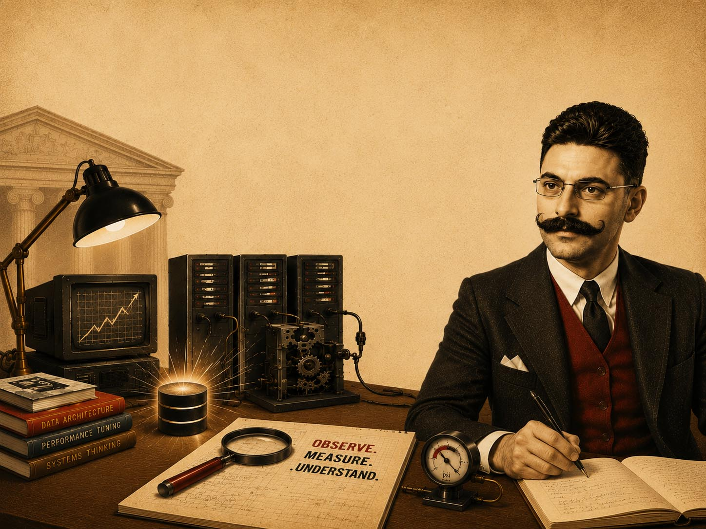

Know-How e Impatto
Esperienza, profondità, impatto
Trent'anni di lavoro sui sistemi che non possono fermarsi — database, data warehouse, team. Profondità tecnica e impatto concreto sul business.
4 profili professionali
In circa trent'anni non ho cambiato mestiere. Ho cambiato profondità.
Ogni ruolo che ho ricoperto non è stato un salto laterale. È stato un approfondimento verticale.
Quello che oggi offro non è un elenco di competenze. È la somma delle conseguenze che quelle competenze producono.
I profili • scorri per esplorare
▦
PM
O